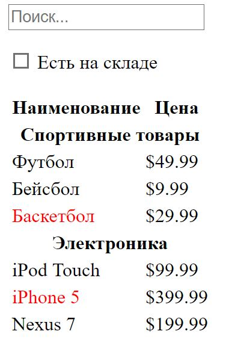
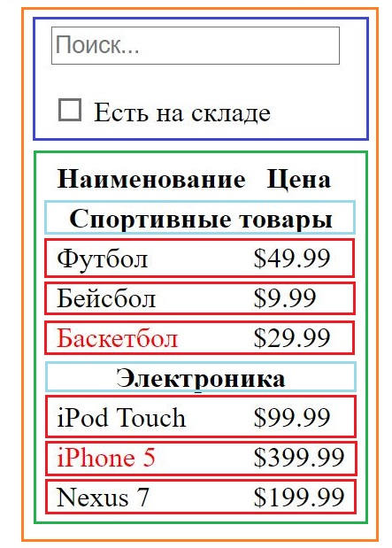

Мышление в React
React, по нашему мнению, - это отличный вариант для создания больших и быстрых веб-приложений с JavaScript. Он отлично вписывается в Facebook и Instagram.
Один из многих крупных моментов React это то, как следует обдумывать приложения при их создании. В этой главе мы покажем весь мыслительный процесс создания системы поиска товара на основе React.
Начните с макета
Представим, что у нас уже есть JSON API и макет приложения, созданный нашим дизайнером:
Наш JSON API возвращает некоторую информацию, которая выглядит так:
[
{category: 'Спортивные товары', price: '$49.99', stocked: true, name: 'Футбол'},
{category: 'Спортивные товары', price: '$9.99', stocked: true, name: 'Бейсбол'},
{category: 'Спортивные товары', price: '$29.99', stocked: false, name: 'Баскетбол'},
{category: 'Электроника', price: '$99.99', stocked: true, name: 'iPod Touch'},
{category: 'Электроника', price: '$399.99', stocked: false, name: 'iPhone 5'},
{category: 'Электроника', price: '$199.99', stocked: true, name: 'Nexus 7'}
];
Шаг 1: Разбейте UI на иерархию компонентов
Первым делом, вы захотите отрисовать рамки вокруг каждого компонента (и подкомпонента) в макете и дать им всем имена. Если вы работаете с дизайнером, то, скорее всего, он уже это сделал. Так что поговорите с ним. Его названия слоёв в Photoshop могут стать отличными именами для ваших компонентов React!
Но как понять, что должен представлять собой компонент? Просто используйте те же решения, которые вы используете при создании новой функции или объекта. Одно из таких решений - это принцип единственной ответственности, означающий, что компонент, в идеале, должен делать только что-то одно. Если компонент слишком сильно разрастается, то следует разбить его на меньшие подкомпоненты.
Так как чаще всего вы представляете модель данных JSON пользователю, то, если ваша модель построена правильно, ваш UI (и, естественно, структура компонентов) будет прекрасно отображаться. Это связано с тем, что UI и информационные модели данных имеют тенденцию придерживаться одной и той же информационной архитектуры, а это значит, что работа по разделению UI на компоненты - тривиальна. Просто разбейте UI на компоненты, которые будут представлять конкретный фрагмент модели данных.
Как видите, у нас имеется 5 компонентов в нашем простом приложении.
- FilterableProductTable (оранжевый): содержит всю информацию.
- SearchBar (синий): принимает данные от пользователя.
- ProductTable (зеленый): отображает и отсеивает коллекцию данных, основываясь на значениях пользовательских данных.
- ProductCategoryRow (бирюзовый): отображает заголовок для каждой категории.
- ProductRow (красный): отображает строку для каждого товара.
Если вы взгляните на ProductTable, то увидите, что заголовок (содержащий подписи "Наименование" и "Цена") не является отдельным компонентом. Исходя из вашего предпочтения, вы можете сделать его отдельным компонентом или частью другого. В нашем случае, мы сделали его фрагментом ProductTable, потому что он является частью отрисовки коллекции данных, за которую и отвечает ProductTable. Однако, если этот заголовок сделать более сложным (например, применить к нему сортировку), то стоит сделать его отдельным компонентом ProductTableHeader.
Теперь, когда мы идентифицировали все компоненты в нашем макете, выстроим из них иерархию:
- • FilterableProductTable
- • SearchBar
- • ProductTable
- • ProductCategoryRow
- • ProductRow
Шаг 2: Построение статической версии в React
Теперь, когда у вас есть иерархия компонентов, пришло время воплотить ваше приложение. Самым простым способом является построение версии, которая будет принимать модель данных и отрисовывать UI, но без интерактивности. Лучше всего отделить эти процессы, потому что построение статической версии требует много типизации и никакого мышления, в то время как интерактивность наоборот - не требует типизации и заставляет многое обдумывать. Далее мы увидим почему так.
Чтобы построить статическую версию вашего приложения, которая будет отображать модель данных, вам необходимо сделать компоненты, которые будут использовать другие компоненты и передавать информацию через свойства. Свойства - это способ передачи информации от родителя потомкам. Если вы знакомы с концепцией состояния, то не будете использовать его при построении статической версии. Состояние предназначено только для интерактивности, т.е. для данных, которые меняются со временем. А так как в данный момент мы строим статическую версию, то состояние нам не нужно.
Вы можете начать строительство иерархии снизу вверх или сверху вниз. Т.е. вы можете начать построение иерархии как с главных (начиная с FilterProductTable), так и с конечных (начиная с ProductRow) компонентов. В простых образцах обычно проще начинать сверху, а в больших проектах - снизу (а также проще писать тесты по мере построения).
В конце данного этапа у вас будет библиотека многоразовых компонентов, которые будут рендерить вашу информационную модель. У компонентов будут только методы render(), так как это статическая версия приложения. Компонент наверху иерархии (FilterProductTable) получит вашу модель данных в качестве свойства. Если вы внесете изменения в эту модель и затем снова вызовите ReactDOM.render(), то UI обновится. Легко понять, как будет обновлен UI и где произойдут изменения, так как ничего сложного не происходит. Односторонний поток данных в React (также называемый "односторонним строительством") сохраняет всё быстрым и модульным.
Шаг 3: Определитесь с минимальным (но полноценным) представлением состояния UI
Чтобы сделать ваш UI интерактивным, необходимо иметь возможность вносить изменения в вашу информационную модель. React позволяет это делать с помощью состояния.
Чтобы построить ваше приложение правильно, вам необходимо обдумать минимальный набор изменяемых состояний, нужных приложению. Ключом к этому будет принцип DRY: Don't Repeat Yourself (не повторяйся). Обдумайте абсолютное и минимальное представление состояния, которое требуется для вашего приложения и вычислите все остальное. Например, если вы делаете список дел, то просто занесите все пункты из него в массив; не стоит держать отдельную переменную состояния для их количества. Лучше, когда вам необходимо отобразить подсчет элементов списка, воспользуйтесь размером созданного массива.
Обдумаем все фрагменты информации из нашего примера приложения. У нас есть:
- • Базовый список товаров
- • Текст для поиска информации, введенный пользователем
- • Значение элемента-флага
- • Отсортированный список товаров
Давайте пройдемся по каждому и определимся с его состоянием. Просто зададим три вопроса каждому из них:
- Он передаётся как свойство от родителя? Если да, то это не состояние.
- Он не изменяется со временем? Если да, то это не состояние.
- Можете ли вы вычислить его, основываясь на другом состоянии или свойстве вашего компонента? Если да, то это не состояние.
Базовый список товаров передаётся как свойство, так что это не состояние. Текст для поиска информации и элемент-флаг похожи на состояние, так как они меняются со временем и не могут быть вычислены на основе чего-то другого. И наконец, отсортированный список товаров не является состоянием, потому что он может быть вычислен с помощью комбинирования базового списка товаров с текстом для поиска информации и элементом-флагом.
Итак, состоянием являются:
- • Текст для поиска информации, введенный пользователем
- • Значение элемента-флага
Определитесь с местом жизни состояния
Итак, мы определились с минимальным набором состояний приложения. Далее, мы должны определить, какой компонент изменяет это состояние или обладает им.
Помните: React полностью основан на одностороннем потоке информации в иерархии компонентов. Может быть не слишком очевидным, какой из компонентов обладает тем или иным состоянием. Чаще всего, это самая сложная для понимания часть, поэтому разберем всё пошагово:
Для каждого фрагмента состояния в вашем приложении:
- • Определите каждый компонент, который отвечает за рендеринг на основе этого состояния.
- • Найдите общий компонент-владелец (компонент, который находится наверху иерархии и включает компоненты, которые используют это состояние).
- • Либо общий компонент-владелец, либо другой компонент, находящийся выше по иерархии, должны обладать этим состоянием.
- • Если вы не можете найти компонент, в который имеет смысл поместить состояние, то создайте новый компонент, который будет отвечать исключительно за состояние, и включите его в иерархию выше общего компонента-владельца.
Давайте пройдемся по этому списку непосредственно на нашем примере:
- • Компонент ProductTable должен сортировать список товаров по состоянию и компонент SearchBar должен отображать состояние текста для поиска информации и элемента-флага.
- • Общим компонентом-владельцем является FilterableProductTable.
- • Наилучшим местом для размещения состояния является FilterableProductTable.
Итак, мы решили, что состояние будет жить в FilterableProductTable. Во-первых, добавим образцовое свойство this.state = {filterText: '', inStockOnly: false} конструктору компонента FilterableProductTable для отражения начального состояния вашего приложения. Затем, передадим filterText и inStockOnly в качестве свойств компонентам ProductTable и SearchBar. Наконец, используем эти свойства для сортировки строк в компоненте ProductTable и задания значений для полей в компоненте SearchBar.
Теперь вы можете сами понаблюдать, как ваше приложение ведет себя: добавьте filterText к "ball" и обновите его. Вы увидите, что ваша таблица данных обновилась правильно.
Добавление инверсного потока данных
Итак, мы создали приложение, которое работает как функция свойств и состояния, передающегося вниз по иерархии. Теперь же пришло время добавить поддержку обратного потока данных: компоненты формы глубоко в иерархии должны обновлять своё состояние в FilterableProductTable.
React делает передачу данных явной для лучшего понимания работы программы, но это требует немного больше кода, чем в традиционной двухсторонней привязке данных.
Если вы попытаетесь ввести данные в поле или поставить галку в элемент-флаг в текущей версии примера, то увидите, что React проигнорирует ваш ввод. Это сделано преднамеренно, так как мы установили, чтобы свойство value элемента input всегда было равно значению state, переданного из FilterableProductTable.
Давайте подумаем, что мы хотим видеть. Мы хотим убедиться, что при каждом изменение данных в форме пользователем будет обновляться состояние. Так как компоненты должны обновлять только своё состояние, то FilterableProductTable будет передавать обратные вызовы в SearchBar, которые будут срабатывать при каждом обновлении состояния. Мы можем применить событие onChange для форм, чтобы быть уверенными, что так и происходит. Обратные вызовы, передаваясь от FilterableProductTable, будут вызывать setState(), и приложение будет обновлено.
Возможно, это звучит сложно, но это всего лишь пара строк кода. Зато, действительно ясно как информация перемещается по приложению.
Конечный вариант нашего приложения будет выглядеть так: